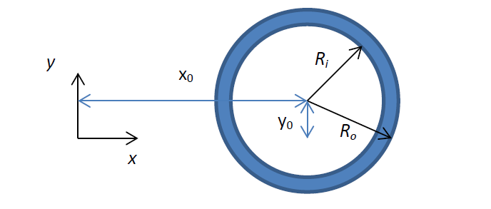
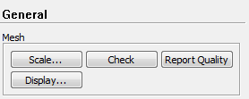
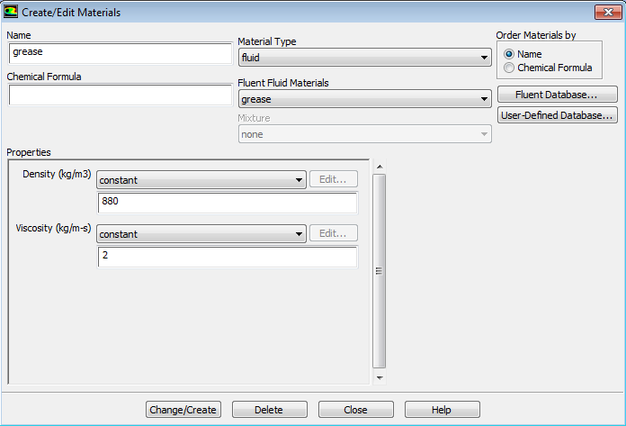
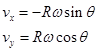
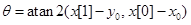
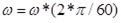
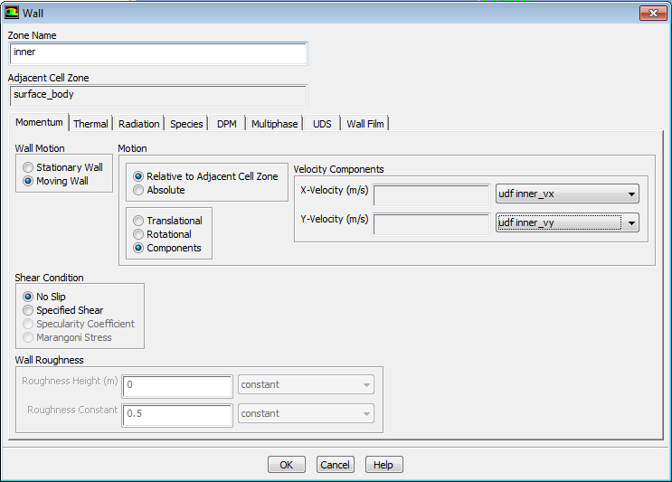
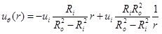

ANSYS® Fluent CFD: A Short Course for Engineers
5.1: Boundary Conditions and User Defined Functions (UDFs)
April 9, 2015 • Computational Science and Engineering
Contents
- Exercise 5.1: Boundary Conditions and User Defined Functions (UDFs)
- Credits
Exercise 5.1: Boundary Conditions and User Defined Functions (UDFs)Introduction¶For this lab, you will simulate the steady flow in a two-dimensional journal bearing. This problem will employ a simple user-defined function (UDF) for treating the boundary conditions. As opposed to the previous problems, this time we will work in physical units. Create the geometry indicated below. Ensure that the circles have a common center that is not at the origin of the coordinate system, and record the value of the offset distances $x_0$ and $y_0$.  The inner radius $R_i$ is $6\,\text{mm}$ and the outer radius $R_o$ is $8\,\text{mm}$. The shaft rotates with angular frequency $1250\,\text{RPM}$. You are interested in calculating the stresses acting on the outer race. |
Geometry and Mesh¶
Note: The mesh geometry expects the length to be expressed in meters.
|
Setup¶


|
Boundary Conditions¶
We will be using the The first line of your file must be
There are three arguments to So, to define our inner race velocity, the UDF will look something like
DEFINE_PROFILE(inner_vx, thread, index)
{
real x[ND_ND]; // position vector, from FLUENT
real x0, y0; // center of circle coordinates
real R, omega; // inner radius and angular velocity
face_t f; // fluent face object
x0 = {the x-coordinate of the center of your circles}
y0 = {the y-coordinate of the center of your circles}
R = {your inner radius, in meters}
omega = {your angular velocity, in rpm}
begin_f_loop(f, thread)
{
F_CENTROID(x, f, thread); // this fills the position vector
F_PROFILE(f, thread, index) = {a function we will define}
}
end_f_loop(f, thread)
}
Some of this we ignore for the time being, like The call to  So we need to calculate theta. From the geometry, we can compute:  where we use the $C$ standard function  In the
And in the
This completes the definition of the boundary conditions with the UDF.

|
Post-processing¶
This problem is known as Taylor–Couette flow where the tangential velocity profile can be written as:  where $r$ is the radial coordinate, $u_i$ is the velocity of the inner race, and $R_i$ and $R_o$ are inner and outer radii, respectively. |
Credits
Sparsh Chadha, Neal Davis, and Zhongzhong Zhang developed these materials for Computational Science and Engineering at the University of Illinois at Urbana–Champaign.
 This content is available under a Creative Commons Attribution-NonCommercial 4.0 Unported License.
This content is available under a Creative Commons Attribution-NonCommercial 4.0 Unported License.